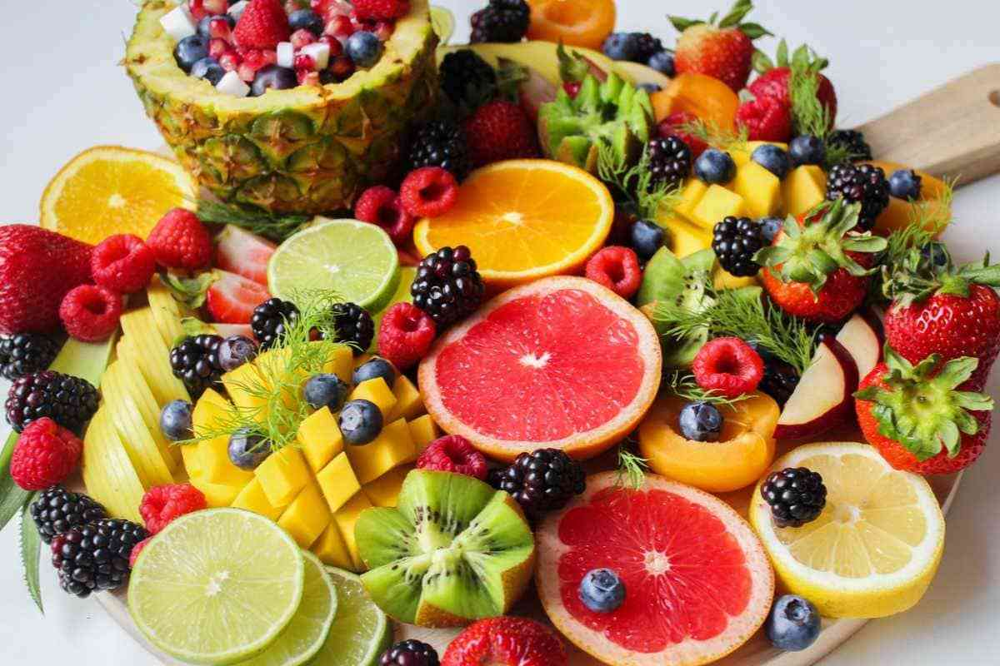
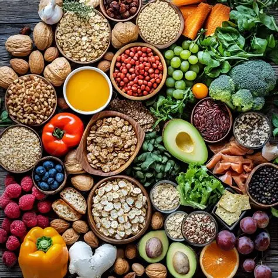

Healthy Eating
Balance, variety, and real food without obsession
Healthy eating does not mean restrictive diets or starving yourself. It is about a balanced diet that provides your body with all the nutrients, vitamins, and minerals it needs to function perfectly.
It is about prioritizing real food and ensuring variety, color, and moderation in daily meals.

Benefits for Body and Mind
How good nutrition impacts your daily life
More Energy
Provides the right fuel for daily activities and improves focus during studies.
Strong Immunity
Protects the body against common infections, colds, and flu.
Balanced Mood
Specific nutrients help produce hormones that promote well-being.
Disease Prevention
Drastically reduces the risk of serious health problems in the future.
Foods and Habits to Adopt Today
Small practical changes to apply to your daily life

Essential Foods
Always include fresh fruits, dark leafy greens, vegetables, whole grains (such as brown rice and oats), and lean proteins.
Drink Water
Maintain constant hydration, aiming for roughly 35ml of water per kilogram of body weight.
Eat Mindfully
Avoid eating while using your phone or watching television to recognize your body's fullness signals.
The Foundation of Longevity and Vitality
A Deeper Look at Healthy Eating
The foundation of a long life lies in whole (unprocessed) foods (as they come from nature) and minimally processed foods (which went through cleaning, grinding, or pasteurization, with no added chemicals).
They preserve the fibers that regulate digestion and the micronutrients that regulate metabolism. A diet rich in these elements cleans the arteries, balances the gut flora, and optimizes brain function.

The Danger of Unhealthy Foods
Hyperpalatability and industry traps
Modern industry has made ultra-processed foods easy to get. They are industrial formulations full of substances extracted from foods (oils, fats, sugar, starch) and synthesized in laboratories (dyes, flavorings, and preservatives).
These products are designed to be hyperpalatable (addictive), making people overeat without receiving any real nutritional value.
Foods That Harm Your Health
The main villains of the daily routine
- Sugary Drinks: Soft drinks, powdered juices, and artificial beverages.
- Ultra-processed Foods: Packaged snacks, filled cookies, and frozen savory foods (such as nuggets and lasagnas).
- Processed Meats: Hot dogs, sausages, ham, turkey breast, and salami.
- Fast Food: Fried foods cooked in oxidized vegetable oils.
Common Bad Eating Habits
Behaviors to avoid
Skipping Meals
Going long periods in forced fasting disrupts metabolism and causes binge eating at the next meal.
Replacing Dinner with a Snack
Swapping a nutritious meal for industrial breads, processed meats, and greasy snacks.
Excess Sodium and Sugar
Adding too much salt or refined sugar to ready-made preparations.